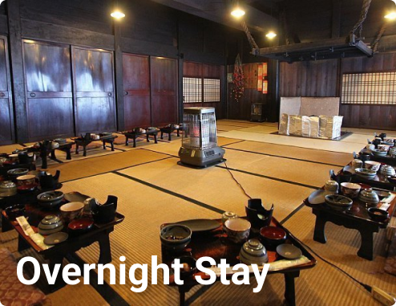
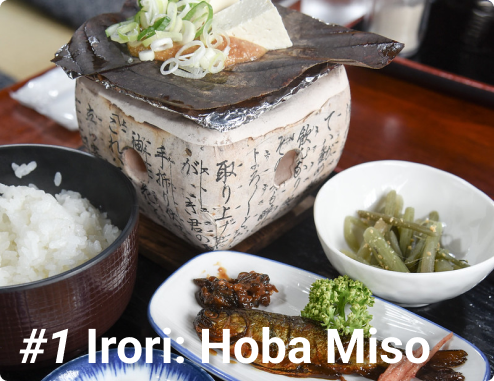

Overview
Hidden deep within the mountains of Japan, Shirakawago is almost cut off from the rest of the world. The traditional style housing, Gassho Zukuri, are unique to the village and are protected by UNESCO. Take a look and experience the history of Japan and visit Shirakawago.
About
Things To Do

Places To Eat
